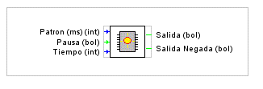
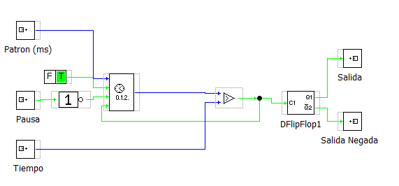

Generador de salida digital de frecuencia variable.


Parámetros:
Patron: Patron de tiempo (lo que vale cada unidad de tempo)
Pausa: Señal que activa o desactiva la genracion de los impulsos
Tiempo: Valor del tiempo en unidades marcadas por el valor del Patrón.
Salida: Salida de Señal.